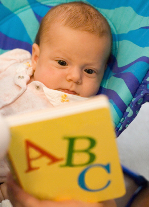

Making baby reading time a priority in your home is one of the easiest ways you can boost up your infant's brain development and scoot her
into the land of language at an earlier age.
No matter how busy you are, reading to your baby just a few minutes a day will not only draw you closer together but will set her on a path of
learning.
This is "homeschooling" in its most basic form.
Simple connecting with your son or daughter, pointing out colors, animals, letters, laughing at silly pictures together...
In other words, creating an atmosphere in your home that says "Books are important! Read them often!".
What a wonderful
legacy to pass on to your children...and then your grandchildren...
Why Should You Bother With Baby Reading Time?

I can hear you wondering. Why bother reading to your infant at this early stage? He's completely clueless about the words you're
saying, and although the pictures may be interesting, everything is interesting at this age!
Actually, there are several strong arguments for early reading with your infant. Setting aside 3-5 minutes several times a day can have a huge
developmental impact on your baby's developing mind. Here's what the experts are saying:
Builds up listening skills
Increases word recognition and vocabulary
Helps develop a long attention span and memory (long-term television exposure encourages short attention spans)
Helps build an early understanding of printed words having meaning
Promotes bonding
Sparks the early flame of imagination and creativity
Introduces concepts like letters, numbers, colors, and shapes
Hearing words spoken imprints them on your baby's brain, encouraging faster language development
Using tone inflection, emotions, and expressive sounds while you read will build your babies social and emotional awareness
(especially as he starts imitating those sounds!)
The more you read with your baby, the more she will realize that reading is important!
What To Choose: How to Evaluate Good Baby Reading Books
Your first priority is to read. Your second priority is to read books that your baby will enjoy. So put down that Aristotle and re-shelve
your well-worn copy of Stephen Hawking's Brief History of Time.
As you are building up your children's library for the years to come, here are some tips on how to choose age-appropriate books your infant will
stay on your lap long enough to read. (Not every book will have all these characteristics, but the more the merrier!)
Engaging images ~ look for books with faces, bright colors, and contrasting patterns to keep your infant's attention.
A good rhythm ~ babies love patterns and rhythms, soothing songs and clever rhymes. (Chicka Chicka Boom Boom does this
wonderfully.)
Quality construction ~ as your baby falls in love with these books, he will explore every inch of them with his fingers,
toes, and mouth. Choose sturdy books that can't be ripped and can withstand some tiny teeth marks over the years.
A size for exploration ~ As your baby gets more mobile, choose books that are small enough for her to hold on her lap
or carry around in her hand. The more cumbersome the book, the less likely she will want to play with it.
Age-relevant ~ As your baby becomes more active, find books that describe taking a bath, eating finger foods etc. As talking
starts, choose books that encourage him to repeat simple phrases and sounds. (Mr. Brown Can Moo...Can You? is great for this!)
Interactive ~ books with flaps to open or interesting textures to touch move baby reading time into baby fun time! Plastic
photo-album books are an essential to help your baby learn who "Aunt Jenny" is, when she lives 8 hours away.
Repetitious wording ~ repeating the same phrases or words over and over again breeds familiarity with the words
themselves. (A great repetitious and beloved book is Are You My Mother by P.D. Eastman.)
Turning Baby Reading Time into Toddler Reading Time... ...Preschool Reading Time... ...Teen Reading Time...
The length of time you spend in baby reading is not as important as the amount of time. Do it in small spurts throughout the day. Before
naptime and bedtime is an obvious place for baby reading. Making it a part of the "sleepytime" routine will help her settle down and get ready to
slide into sleep.
Here are a few other basic tips on how to get your baby to fall into love with reading, and stay there!
Finishing the book is not important. Skip around if you want. The important thing is that your baby is looking at pictures, hearing your voice,
and (perhaps, if she's ready) even turning the pages.
Pack a few of the smaller board books in the diaper bag or in a special stash in the car. They have an amazing ability to distract grumpy
infants (and older children for that matter!) long enough to get past the waiting room, or get home to dinner. (Fuzzy Fuzzy Fuzzy is a great
distractable baby reading book for the diaper bag.)
The more books you have around, the more likely your baby will grow up seeing books as an essential part of everyday life.
As your baby
begins to crawl, be sure to set out a basket with his favorite books to empty and explore!
Teach your baby critical thinking by asking questions as you read. This could be as simple as location and sounds ("Where's the kitty? What sound does a kitty make?")
to more complex questions about the characters ("Sara is crying. Is she happy or sad?") to encourage emotional development.
If you can, relate the
story to her life ("Which animal is a monkey? Remember the monkey's we saw at the zoo?").
Be prepared to read the oldies over and over again! Repetition is a young reader's pathway into a lifetime of good reading habits!
Stories that are easily predictable (the action repeats itself over and over again) are especially effective at this age.
(Goodnight Moon is a great example of this repetition.)
Older babies (around their 1st birthday) can begin having "Quiet Times" with a few sturdy board books in their crib. Not only does
this encourage independent reading, it helps baby get used to having some alone-time during the day (a Mommy-sanity-saver later on!).
Side Note: I have a video
monitor on my baby during this time, so I can see how she's doing and whether she is "eating" the books. If I see she's chewing on a board book
corner, I promptly go in, take away the books ("No Chew!") and leave for a minute. I return after a minute and we do it again. Eventually she
picks up on the pattern and starts reading (not eating) the books, having learned that if she does she'll be left in her crib for a minute with
nothing to do!
Start with 15 minute Quiet Times, building up until she can handle 30-45 minutes of alone time around her 2nd birthday. My 6 year-old
still has a 1-hour quiet time every day. She looks forward to it (as do I!).
Build local library excitement! Many libraries offer reading programs for infants. By regular visits to the library (even monthly)
your infant will start to recognize "the book place" and get excited!
Become an avid reader yourself. If you struggle with reading, find a genre that you're interested in and then stick to it.
A friend of mine hated reading until she discovered biographies. Reading the stories of real people helped her switch from being a TV-aholic
to budgeting for monthly trips to Borders!
The more often your child sees you reading, the more likely he is to value reading as well.
(The same can be said of television! The more your growing child sees you watching TV, the more important he'll assume TV is. Discipline yourself to
living with limits on the TV. Your whole family will benefit!)
Getting Started: The Best Baby Reading Time Books
To help you get started, I've included several reviews of the best baby reading books out there. I've listed them below. If you have a favorite
book not listed, email me with your suggestion so I can add it to the list!
If you've read any of these books, click on the title and leave your comments! Other browsing moms will appreciate it!
"Teach Your Baby to Read" Phoney-Baloney or Baby-Genius-Maker?
I'll confess, I've not been too charitable with those "teach your baby to read" programs. They all seemed like hype and hooey. However, the proof
(they say) is in the pudding. And I've seen the pudding. So I'm correcting my baby reading prejudice. I've actually been impressed.
It really is remarkable. (There are two videos below that can show you what I mean.) I've been converted.
The two largest "Teach Baby To Read" programs out there are
Your Baby Can Read
(YBCR)
and BrillKids.
While researching this article, I've decided to grant the gold-medal award to BrillKids
(However, feel free to peek at Your Baby Can Read to compare them for yourself.)
BrillKids offers a free 14 day trial (YBCR offers a 30 day trial, but you have to pay $12.95) and free downloads to help you
really understand what you may be purchasing before you pony-up the money.
They offer a forum community and newsletter for support.
Rather than a package of DVD's you have to figure out yourself, they break everything down into a curriculum you can easily follow,
taking the pressure off. (Not to mention all the free teaching downloads available online.)
Besides reading (called "Little Reader"), they also have baby math and baby music for budding Einsteins and Mozarts.
An online progress diary automatically tracks your progress through the curriculum.
Rather than an up-front cost, they offer monthly payment plans. Choose from unlimited, 1 year, and 6 months access to fit your
budget perfectly. A 100% money-back guarantee lets you give it an 'ole college try, beyond the 14-day free trial period..
The Nuts and Bolts: Is BrillKids A Good Investment for YOU?
As great as I feel BrillKids is, I don't think it is for everyone. If you're working two jobs, have 2 other kids, and generally get about 5
hours of sleep every evening...don't try to teach your baby to read.
This program is best suited for parents who are willing (or able) to make a daily/weekly investment of several minutes to sit and teach their baby to read.
Yes, it will be fun. But you still have to have the time to use what you pay for. (Otherwise you've paid to teach your baby nothing.)
On the other hand, for parents who are willing and able to take a little extra time to do that educating, the benefits are outstanding.
Since reading is the backbone of a good education, the investment you make now can pay your child dividends later.
Sit down and evaluate the program (the free trial is helpful here)
to discover if the BrillKids Little Reader curriculum is a perfect fit for you, or if it's a bit overly-ambitious for your current season of life.
Establishing a baby reading time every day should be one of your priorities. Not only will it promote healthy bonding, it will build the brain
cells your infant will need in the years to come!
Besides reading to your baby, you could launch out and teach your baby reading skills she will thank you for later! If this interests you, I
recommending giving the free 14-day trial at BrillKids a whirl.
If you can make that time investment into your infant,
you'll be guaranteed to see your baby reading by her first birthday (or they will refund your money).
ADD TO YOUR SOCIAL BOOKMARKS:BlinkDel.icio.usDigg FurlGoogleSimpySpurlTechnoratiY! MyWeb
I just subscribed to the site, and I'm very happy I did. I have worked in the medical field for several years and love to have good resources for when things come up... ~ Crystal S.
What a great site and thanks for having it available! ~ Bernadette W.
I'm very excited to start receiving the newsletter. I've checked out your site a couple times and I loooovve how it's arranged, your language, and tips - it's great! ~ Emily N.
Heather, I can't express how happy I am I discovered your site! ~ Liza T.
Thank you Heather, for your wonderful newsletter. There is always something new! ~ Desiree T.
I'm a 1st time young mom, 23 and single, so I have found very very helpful...I can't seem to stop myself telling everyone I know about you, some thought you were my mom! ~ Vuyiswa N.
Your website is very helpful and I discovered a couple of great online stores. 'Cause I'm not a big reader, it is very nice that I can find the most important information through your
website. ~ Tonya G.
Thanks Heather! Your Milestone eBook is SO detailed and so correct. My son is doing all or most of the things and many are not mentioned in the usual books/sites. Great job and keep it up! ~ Anwesha C.
Thanks so much for creating such an AWESOME website. I really appreciate your sense of humor and real writing style. ~ Andrea Z.
My baby refused all bottles until you showed me the MAM bottle. Thank you so much for the recommendation. I wouldn't have known about them if not for your website. ~ Jennifer at Sweet Lilly ConfectionsThank you ladies! Talk about great motivation to keep writing...


 I just subscribed to the site, and I'm very happy I did. I have worked in the medical field for several years and love to have good resources for when things come up...
I just subscribed to the site, and I'm very happy I did. I have worked in the medical field for several years and love to have good resources for when things come up...